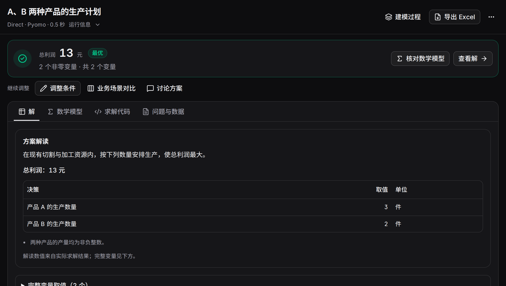

用一个生产问题走完描述、建模、求解、导出与条件调整。示例有完整题面、可下载数据和中英文工作台录屏。
1. 准备平台与预设#
打开团队平台地址，或先安装并启动。点击左下角“预设模型”，选择可用模型；添加配置的步骤见模型预设。
可以在“优化对话”发送问题，也可以从首页手动建模。下面使用 Direct、Pyomo 和 AUTO，便于跟随录屏。
2. 输入问题#
工厂生产A、B两种产品，产量均为非负整数。
A每件利润3元，占用切割2小时、装配1小时。
B每件利润2元，占用切割1小时、装配2小时。
切割和装配各有8小时可用。
请计算总利润最高的生产计划。
点击“开始建模”，查看生成公式、代码和求解的过程。数据版可下载 JSON 或 CSV，将附件字段和两项容量写入题面后运行。
3. 查看方案并导出#
结果为 A=3、B=2、总利润13元。在“解”中读取产量，在“数学模型”和“求解代码”查看表达；顶部“导出Excel”下载方案与问题条件两张工作表。

“运行信息”保留方法、模型、实际后端、耗时和调用量。点击“建模过程”查看各阶段。
4. 调整与比较#
点击“调整条件”，输入“B至少生产3件，其他保持不变”。新方案为 A=2、B=3、利润12元，对比页显示与原方案的变化。
再使用“业务场景对比”，同时计算B至少3件与至少4件，两个场景利润分别为12与8。操作说明见场景比较。
5. 跟着录屏操作#
查看字幕文字
- 填写生产需求，开始自动建模。
- 查看实际方案：A 为 3，B 为 2，总利润 13。
- 输入两个业务场景：B 至少 3 件，以及 B 至少 4 件。
- 同一基准下对比：原方案利润 13，两个场景分别为 12 和 8。
- 打开附件，检查字段和数据。
- 修改 A 的单件利润并保存到需求稿。
录屏顺序：输入生产需求 → 查看利润13的方案 → 填写两个场景 → 比较13、12、8 → 打开数据编辑器 → 修改并保存单件利润。使用播放器控件暂停、开启字幕或全屏。
6. 在文档里先试一次#
修改容量、最低需求或数量类型，查看对应方案，再下载CSV。准备好自己的问题后，可用需求助手整理规则，或直接进入优化对话。
A 每件利润 3 元，B 每件 2 元。选择工时与最低订单，比较两种产品的产量和总利润。
最大化 3A + 2B
2A + B ≤ 8；A + 2B ≤ 8；B ≥ 0
A、B 为非负整数
切割上限装配上限可行域最优方案
切割使用 8 / 8 小时；装配使用 7 / 8 小时。
固定教学案例，数值在浏览器中即时计算。